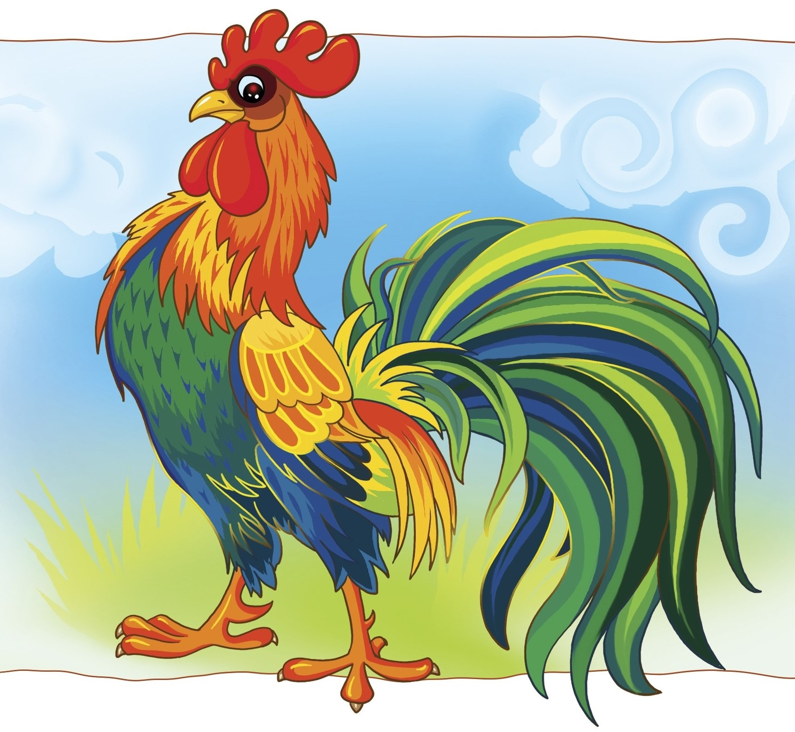
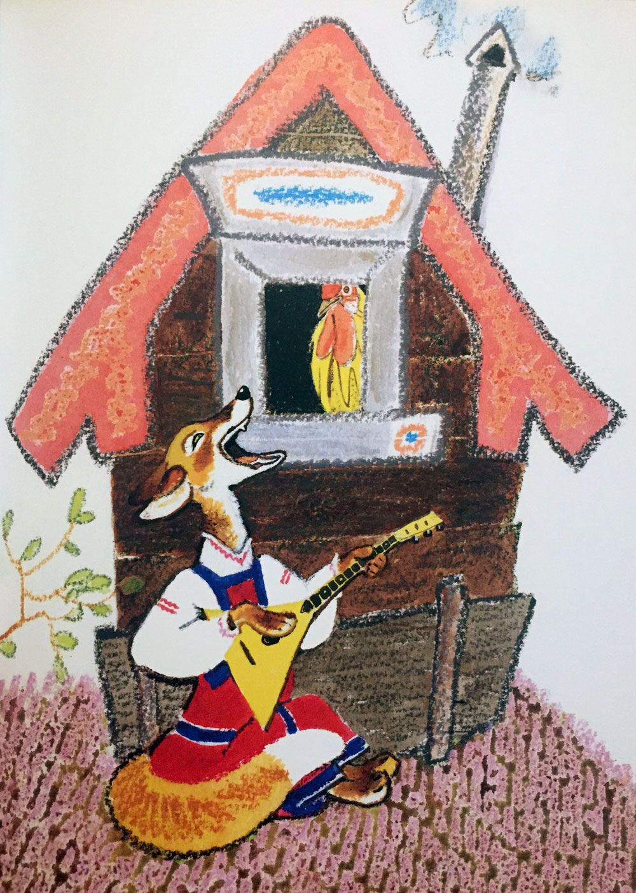
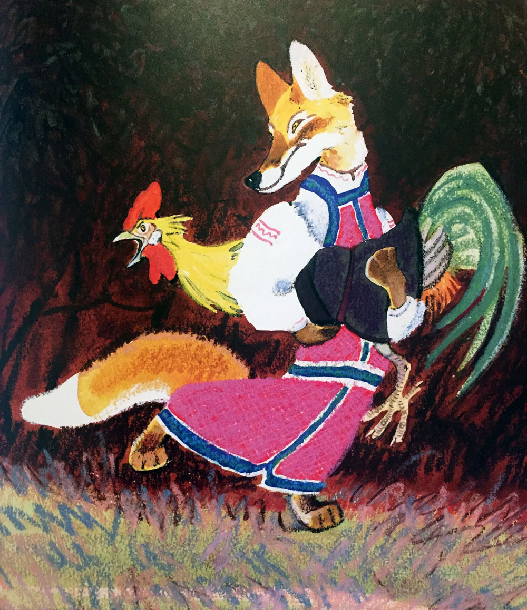
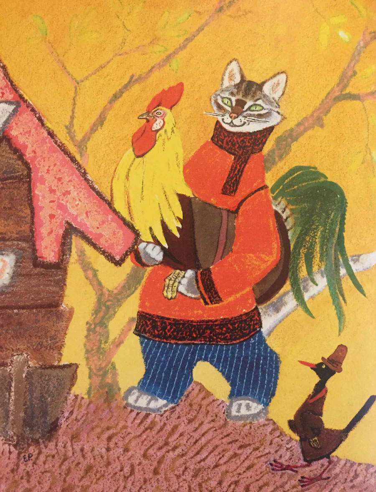

Петушок золотой гребешок

Жили-были кот, дрозд да петушок — золотой гребешок. Жили они в лесу, в избушке. Кот да дрозд ходят в лес дрова рубить, а петушка одного оставляют.
Уходят — строго наказывают:
—Мы пойдем далеко, а ты оставайся домовничать, да голоса не подавай; когда придет лиса, в окошко не выглядывай.
Проведала лиса, что кота и дрозда дома нет, прибежала к избушке, села под окошко и запела:

—Петушок, петушок,
Золотой гребешок,
Масляна головушка,
Шелкова бородушка,
Выгляни в окошко,
Дам тебе горошку.
Петушок и выставил головку в окошко. Лиса схватила его в когти, понесла в свою нору.

Закричал петушок:
—Несет меня лиса
За темные леса,
За быстрые реки,
За высокие горы...
Кот и дрозд, спасите меня!..
Кот и дрозд услыхали, бросились в погоню и отняли у лисы петушка.
В другой раз кот и дрозд пошли в лес дрова рубить и опять наказывают:
—Ну, теперь, петух, не выглядывай в окошко, мы еще дальше пойдем, не услышим твоего голоса.
Они ушли, а лиса опять прибежала к избушке и запела:
—Петушок, петушок,
Золотой гребешок,
Масляна головушка,
Шелкова бородушка,
Выгляни в окошко,
Дам тебе горошку.
Петушок сидит помалкивает. А лиса — опять:
—Бежали ребята,
Рассыпали пшеницу,
Курицы клюют,
Петухам не дают...
Петушок и выставил головку в окошко:
—Ко-ко-ко! Как не дают?!
Лиса схватила его в когти, понесла в свою нору.
Закричал петушок:
—Несет меня лиса
За темные леса,
За быстрые реки,
За высокие горы...
Кот и дрозд, спасите меня!..
Кот и дрозд услыхали, бросились в погоню. Кот бежит, дрозд летит... Догнали лису — кот дерет, дрозд клюет, и отняли петушка.
Долго ли, коротко ли, опять собрались кот да дрозд в лес дрова рубить. Уходя, строго-настрого наказывают петушку:
—Не слушай лисы, не выглядывай в окошко, мы еще дальше уйдем, не услышим твоего голоса.
И пошли кот да дрозд далеко в лес дрова рубить. А лиса — тут как тут: села под окошечко и поет:
—Петушок, петушок,
Золотой гребешок,
Масляна головушка,
Шелкова бородушка,
Выгляни в окошко,
Дам тебе горошку.
Петушок сидит помалкивает. А лиса — опять:
—Бежали ребята,
Рассыпали пшеницу,
Курицы клюют,
Петухам не дают...
Петушок все помалкивает. А лиса — опять:
—Люди бежали,
Орехов насыпали,
Куры-то клюют,
Петухам не дают...
Петушок и выставил головку в окошко:
—Ко-ко-ко! Как не дают?!
Лиса схватила его в когти плотно, понесла в свою нору, за темные леса, за быстрые реки, за высокие горы...
Сколько петушок ни кричал, ни звал — кот и дрозд не услышали его. А когда вернулись домой — петушка-то нет.
Побежали кот и дрозд по лисицыным следам. Кот бежит, дрозд летит... Прибежали к лисицыной норе. Кот настроил гусельцы и давай натренькивать:
—Трень, брень, гусельцы,
Золотые струночки...
Еще дома ли Лисафья-кума,
Во своем ли теплом гнездышке?
Лисица слушала, слушала и думает:
«Дай-ка посмотрю — кто это так хорошо на гуслях играет, сладко напевает».
Взяла да и вылезла из норы. Кот и дрозд ее схватили — и давай бить-колотить. Били и колотили, покуда она ноги не унесла.
Взяли они петушка, посадили в лукошко и принесли домой. И с тех пор стали жить да быть, да и теперь живут.
